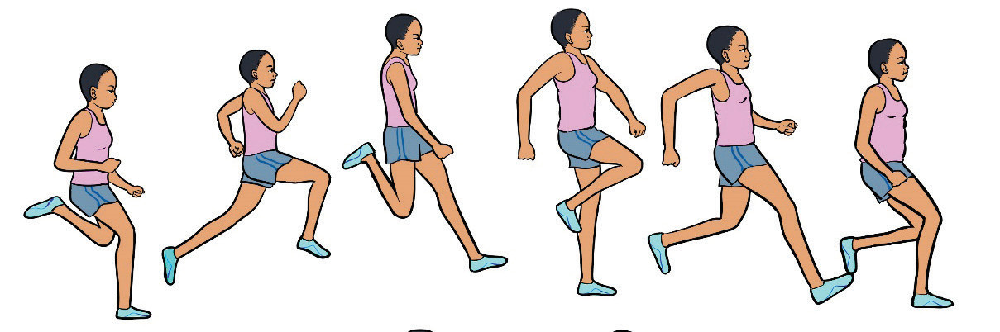

Three successive jumps
The three successive jumps are hop, step and jump. These jumps occur in a specific order after the athlete takes off from the take-off board.
Hop
In the first jump, the athlete takes off from one foot at the take-off board and lands on the same foot on the runway. Follow these steps to execute the hop effectively:
(i)
Actively plant the take-off foot on the ground before initiating take-off;
(ii)
Drive the take-off leg forward and upward;
(iii)
Swing the free leg’s thigh parallel to the ground;
(iv)
Extend the free leg fully while reaching and executing a pawing action during landing;
(v)
Bring up the take-off leg toward your buttock, then move it forward and downward;
(vi)
Maintain an upright trunk, keep your head still, and focus your eyes forward; and
(vii)
Push backward slightly with your foot during landing to stay stable and prepare for the next jump, Figure 2.28.

a b c d e fStep
In this stage, the athlete lands on the opposite foot on the runway. Follow these steps to execute the step effectively:
(i)
Extend your ankle, knee, and hip to generate a quick take-off;
(ii)
Maintain the take-off position to prepare for the jump;
(iii)
Keep the free leg’s thigh parallel to the ground, then extend the foot forward until it is nearly fully stretched from the hip;